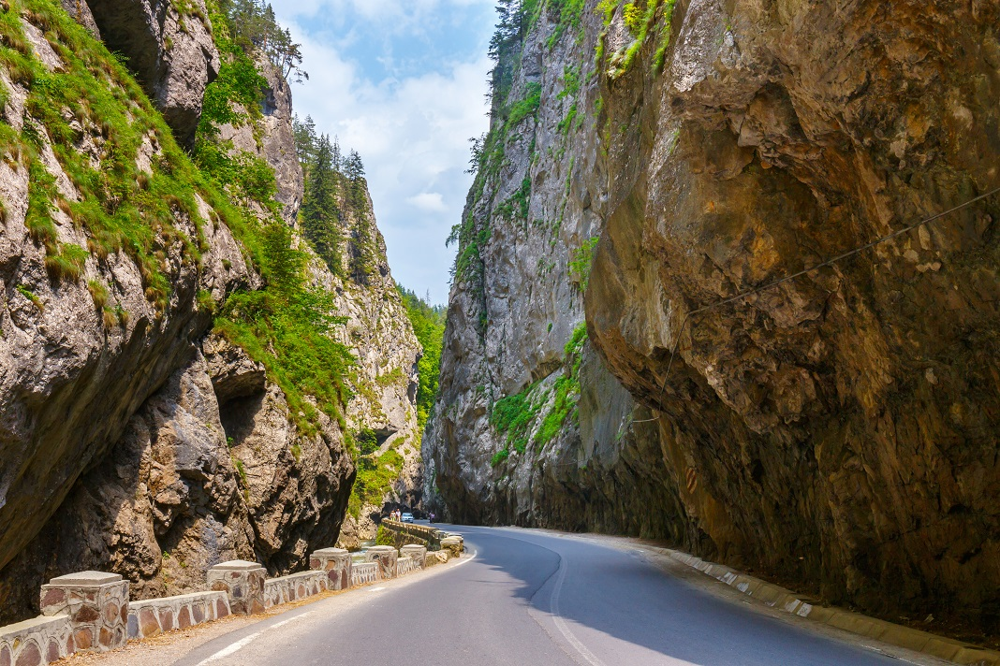

Cheile Bicazului
Pret: 75 Euro
Cheile Bicazului reprezintă o zonă geografică deosebit de pitorească din România situată în partea centrală a Munților Hășmaș, în nord-estul țării în județele Neamț și Harghita.
Pret: 75 Euro
Cheile Bicazului reprezintă o zonă geografică deosebit de pitorească din România situată în partea centrală a Munților Hășmaș, în nord-estul țării în județele Neamț și Harghita.
Pret: 40 Euro
Mănăstirea Neamț este o mănăstire ortodoxă de călugări din România, situată în comuna Vânători-Neamț, satul Mănăstirea Neamț, județul Neamț. Este cel mai mare și mai vechi așezământ monahal din Moldova, fiind declarat monument istoric.
Pret: 25 Euro
Mănăstirea Saharna, în întregul ei ansamblu, este unul din cele mai vechi așezăminte monahale din cadrul Bisericii Ortodoxe din Republica Moldova. Ansamblul monastic este compus din două mănăstiri: una rupestră și alta terestră.
Pret: 15 Euro
Cetatea Soroca este o cetate moldovenească din secolul al XVI-lea, clădită din lemn de Ștefan cel Mare, în fața vadului peste Nistru, și reconstruită în piatră de către Petru Rareș, la mijlocul secolului al XVI-lea.
Pret: 15 Euro
1.Ferma de struți de la Bardar
2.Complexul Manuc-Bei din Hânceşti din care fac parte : Castelul de vânătoare in care este amenajat Muzeul de Etnografie şi Istorie Naturală din or. Hâncești (Interior) Palatul princiar sau Versaille al Moldovei (Exterior) Casa Vechilului (Exterior)

Pret: 20 Euro
Tighina: cetatea, muzeul de istorie şi etnografie regională;
Chițcani: Mănăstirea “Noul Neamţ”, Capul de pod Chițcani.
Tiraspol: Catedrala „Nașterea Domnului”, Combinatul de vinuri şi coniacuri „KVINT“(exterior), complexul sportiv „Șeriff”(exterior), monumentul generalisimului “Alexandru Suvorov”, Memorialul Gloriei. Timp Liber

Pret: 11 Euro
Iașul îl poți vedea dacă te ridici în degete și-ți îndrepți privirea peste Prut, însă câți din noi au vizitat cu adevărat acest oraș fermecător?! Iași – orașul în care se împletește armonios trecutul cu prezentul, al primei universități din România, primei mari Uniri, al primului spectacol de teatru în limba română.
Pret: 10 Euro
Excursia la Plaiul Fagului este una dintre cele mai interesante excursii de informare despre flora și fauna pădurilor din Moldova, în special a celor de fag și a celor amestecate cu gorun, frasin și carpen. Veți vedea locuri unice de poveste unde încă nu a intervenit mâna omului, unde din trunchiurile vechi de copaci, pe care îi pot îmbrățișa doar câțiva oameni, cresc alți copaci tineri. E o aventură prin jungla moldovenească unde prin hățișurile dese există doar o mică trecere… Vă invităm la ea și vă așteptam cu nerăbdare.